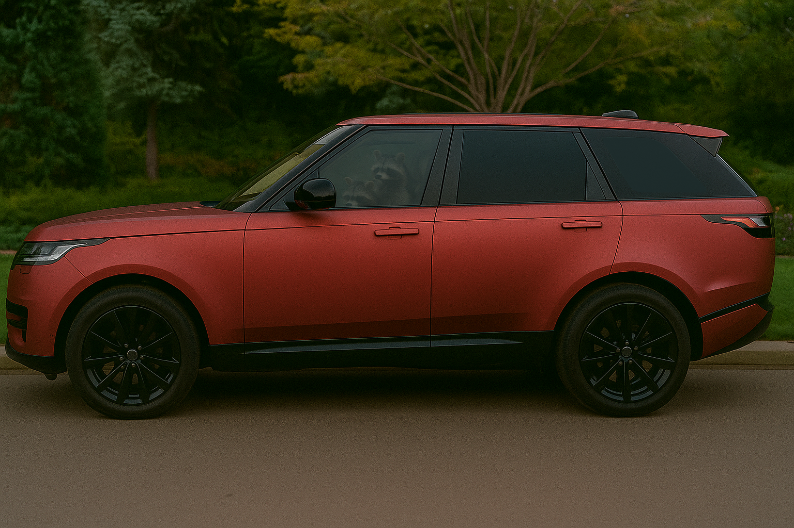
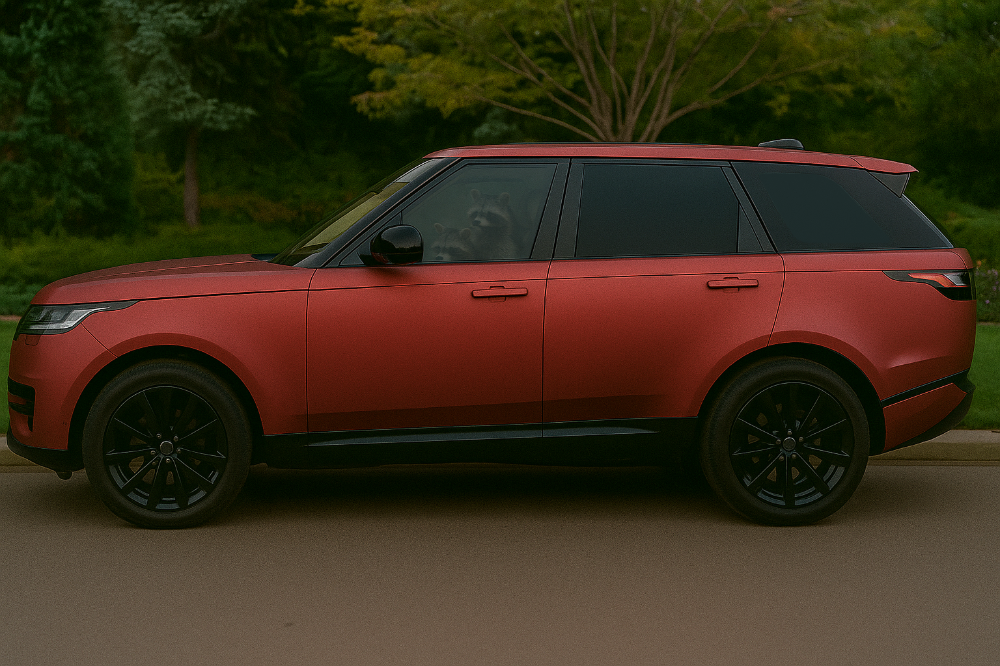

Covering
Transformez votre véhicule sans compromis. Le covering vous permet de changer radicalement l’apparence de votre voiture avec un rendu premium, sans peinture définitive. Finition satinée, mate ou brillante, couleur unique ou effet carbone : chaque détail compte. C’est la solution idéale pour affirmer votre style, protéger votre carrosserie d’origine, et rouler avec un véhicule qui vous ressemble.
PPF Paint Protection Film
Rayures, impacts, micro-chocs ? Le film de protection PPF agit comme un bouclier transparent. Ultra-résistant et quasiment invisible, il épouse parfaitement les formes de votre carrosserie pour la protéger au quotidien tout en conservant l’éclat d’origine. Préservez la valeur de votre véhicule, évitez les frais de retouches, et profitez de la route l’esprit tranquille.
 
